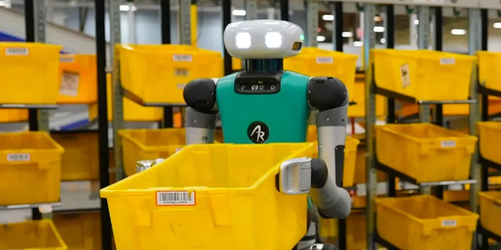

Amazon mise sur l’IA agentique pour révolutionner la logistique robotisée
De O.Abdelwahd · Publié le 16 juin 2025
Amazon a récemment annoncé la création d’un nouveau groupe de recherche et développement axé sur l’IA agentique et la robotique. Ce groupe sera intégré au Lab126, la division R&D matérielle d’Amazon, connue notamment pour avoir conçu l’Amazon Echo et la liseuse Kindle.
La mission de ce groupe sera de développer un framework d’intelligence artificielle agentique pour équiper les robots d’entrepôt de capacités d’autonomie avancées. Contrairement aux systèmes traditionnels, cette IA agentique leur permettra de comprendre une consigne formulée en langage naturel, de la décomposer en sous-tâches, et d’agir de manière autonome pour atteindre l’objectif fixé, sans intervention humaine à chaque étape.
Une IA autonome et polyvalente
L’ambition d’Amazon est d’intégrer à court terme ces capacités dans des robots logistiques plus polyvalents, capables de gérer les diverses tâches que l'on retrouve en entrepôt telles que le déchargement des camions, la gestion des colis, ou encore l’exécution d’ordres vocaux.
Alors que les robots actuels sont souvent limités à une fonction précise, l’IA agentique vise à transformer ces outils en véritables assistants intelligents capables d’adaptation, capables de réagir aux imprévus, de s’ajuster à leur environnement, et même de corriger leurs propres erreurs.
Vers une révolution logistique
Cette technologie ouvre la voie à une transformation profonde de la logistique : des robots capables de changer de tâche à la volée, sans reprogrammation ni supervision constante. Cela permettrait d’accroître la flexibilité des entrepôts, de réduire les temps morts, et d’optimiser la gestion des flux, même en période de forte activité.
Un impact économique majeur
Amazon anticipe un potentiel économique colossal. En misant sur cette IA avancée, le groupe espère créer un écosystème robotique intelligent générant des gains de productivité considérables, tout en conservant sa position de leader sur le marché de la logistique automatisée.
Cette technologie pourrait à l’avenir s’exporter au-delà de la logistique, touchant des secteurs comme la fabrication, la livraison ou même l’assistance client. Amazon voit dans cette innovation l'avenir de la logistique.

Un robot autonome en action dans un centre logistique Amazon. Source : Amazon
Avec l’IA agentique, Amazon ne cherche pas simplement à optimiser ses entrepôts, mais à poser les bases d’une nouvelle génération de robots industriels : plus intelligents, plus autonomes et profondément intégrés à la chaîne logistique mondiale.